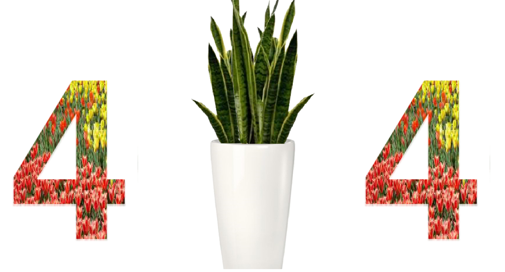

Plant!= 
Give us a moment, let us change your greens.
Give us a seed, and we'll change your scenes.
El vivero Plant!=404 es la solución al incremento de la biodiversidad en Buenos Aires.
El vivero Plant!=404 es el vivero dedicado exclusivamente a la propagación de plantas nativas de
Buenos Aires.